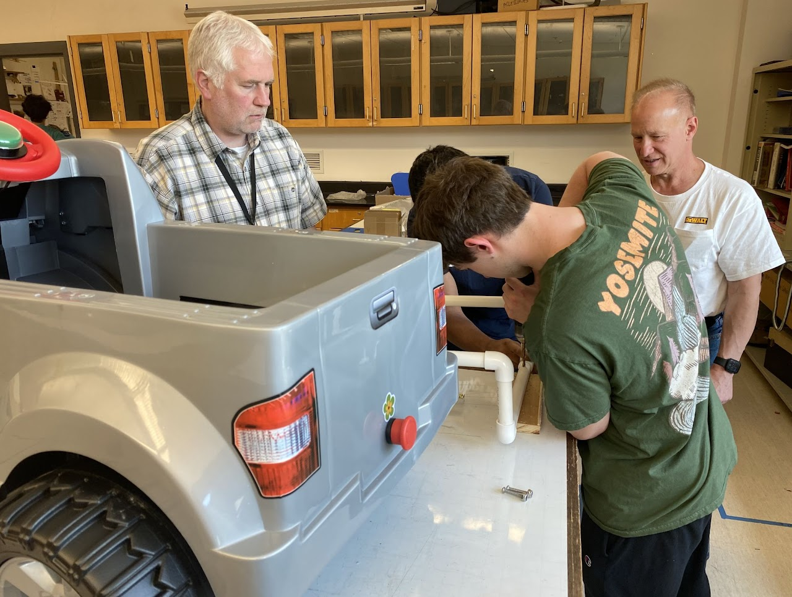

For 2023-2024, we started off by visiting our three local elementary schools and a middle school and giving presentation about the engineering design process and our robot for our 2022-2023 season. We would then visit a daycare for K-5 and talk about our robot and the engineering design process. Later on in the summer we would host a summer camp(check out the summer camp tab for further info) at our high school for one week for ages 10-14 where we would teach them about arduino boards and how electronics work.
This season is where our outreach team has really started up. First, we just visited the elementary schools to show off our competition robot and let the elementary schoolers drive it around. We are also running several other projects.
First, a group of our seniors is working to establish a public 3D makerspace for Westford Academy students, from within Robotics and outside. We are developing space in the school which previously went unused, and introducing new technology to help better prepare students for college and allow them to exercise their creativity.
We are also working with an organization called GoBabyGo to modify small drivable cars to make them more viable for disabled/special needs children to pilot.
On top of that, we are running the summer camp this year for a two week period, more information on that can be found in the "Robotics Summer Camp" tab.
We are also running a week long program at the Apeejay Noida school in India. It will be free for students in the area who are interest in FIRST robotics and getting involved with their local competition community.
For 2019-2020, we decided to host another workshop event at J.V. Fletcher Library in Westford MA, with another team: fellow Westford FTC team, Ninja Chickens. We also gave a presentation on STEM, FIRST, and robotics having the audience be able to drive the robot we created.
We also had another outreach at one of our members house where a presentation was given about the ins and outs of our robot
Hopefully we plan to do more events like this in the future, in events in our library, schools, and STEM fairs.
Also, we spoke about our robot and described the FTC challenge to several children and parents who were interested in robotics. We began by explaining the code, and the different obstacles to complete during autonomous. Next, we showed them the different parts on our robot and explained how they worked (such as the linear slides, Z-lift, and claw mechanism). We also talked about robotics in general, and how STEM is incorporated into these challenges. There were many questions about how the robot is driven, so we showed how to drive the robot and then ended the session by allowing the children to drive our robot!

After much success with our event last year, we decided to host another workshop for students in 3rd to 8th grade in our local community where we displayed our robot, introduced them to FTC, and challenged them to use their STEM skills. We also had an opportunity to meet with children who are part of an FLL team and give them pointers for their competition.
We also plan to do more events like this in the future as well as events in our town library and at local schools and STEM fairs.
This year, we hosted an event in which we invited children to come and learn about FIRST and pursuing a career in STEM. We presented them with a challenge and asked them to create a robot they thought would best complete the challenge. After they built a robot, they had a chance to drive ours.
Next year we are considering hosting an event at our local library and an event at a local college where students can come for the day and explore the field of robotics.